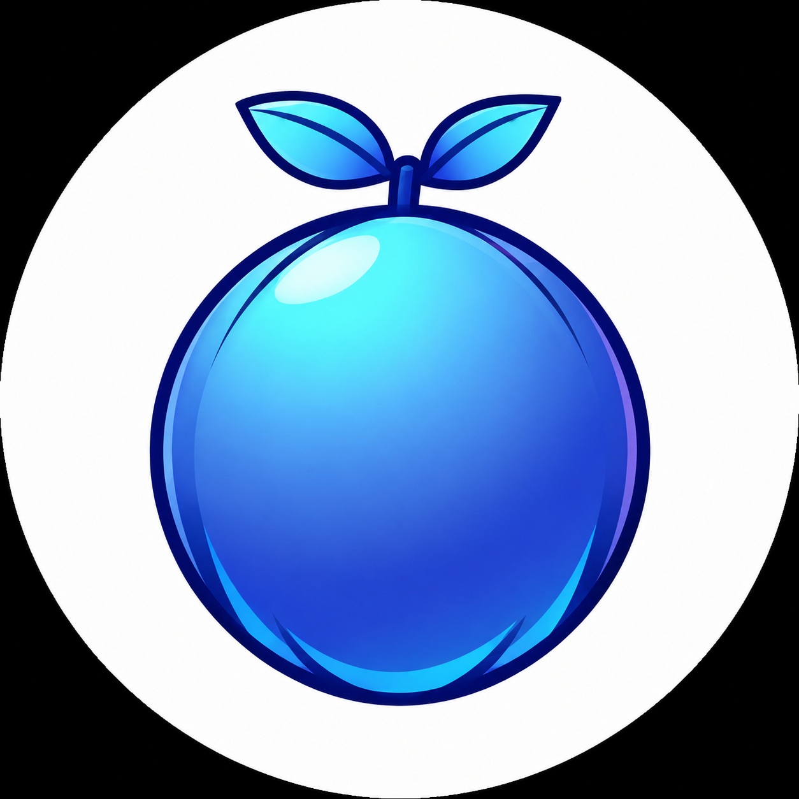
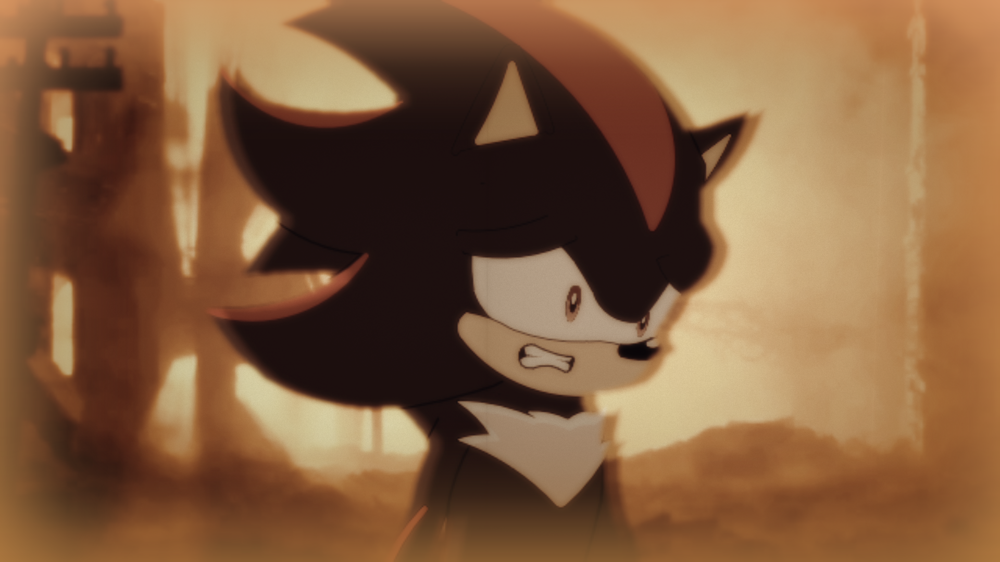
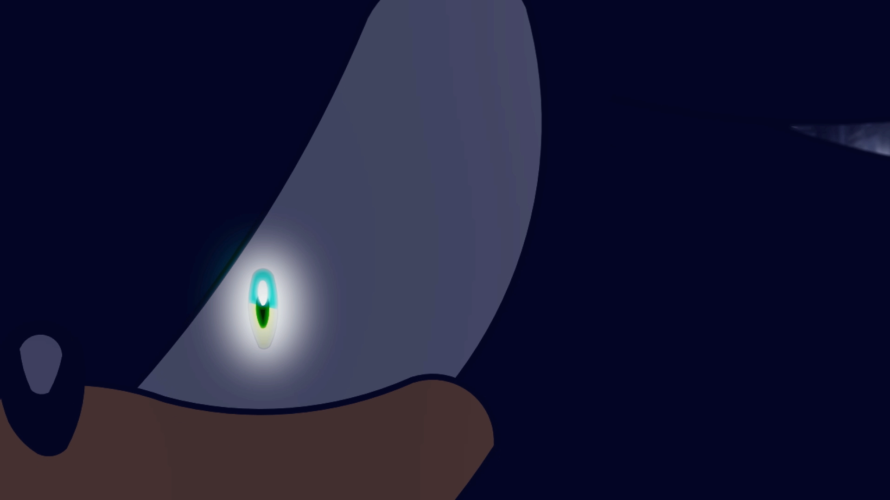
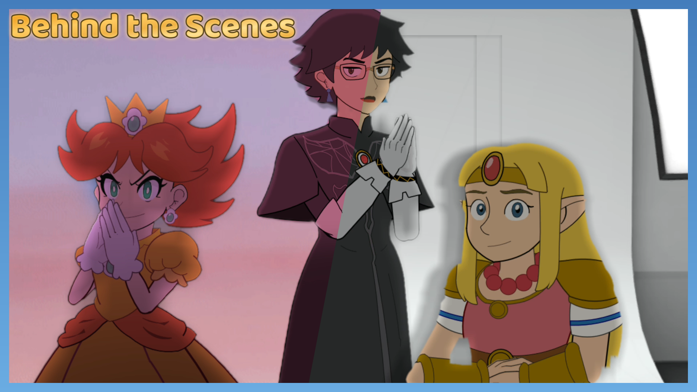
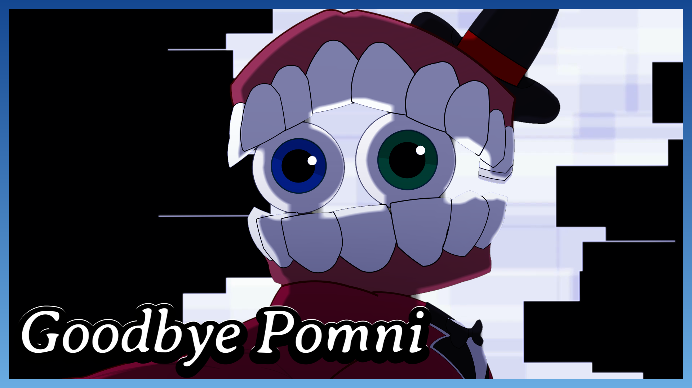
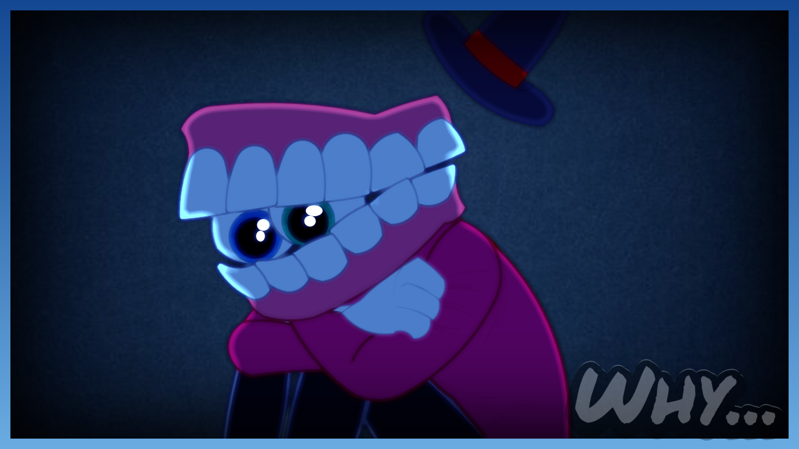
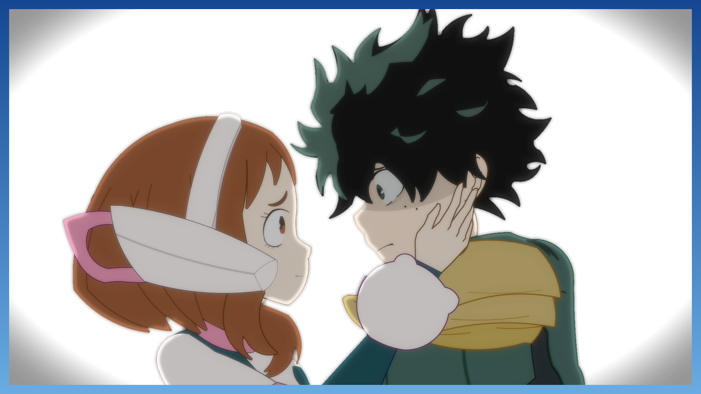

Blue Orange Studio
Canal de animação

Canal de animação
Criei este canal em 2025 para fazer o que eu mais gosto: criar. O conteúdo é baseado em animações feitas inteiramente por mim — dos desenhos à edição — e voltado para o público internacional, sendo majoritariamente em inglês. Todo o processo de animação e edição eu aprendi por conta própria, na base da tentativa e erro e de tutoriais no YouTube. Não foi utilizada nenhuma IA para as animações.





